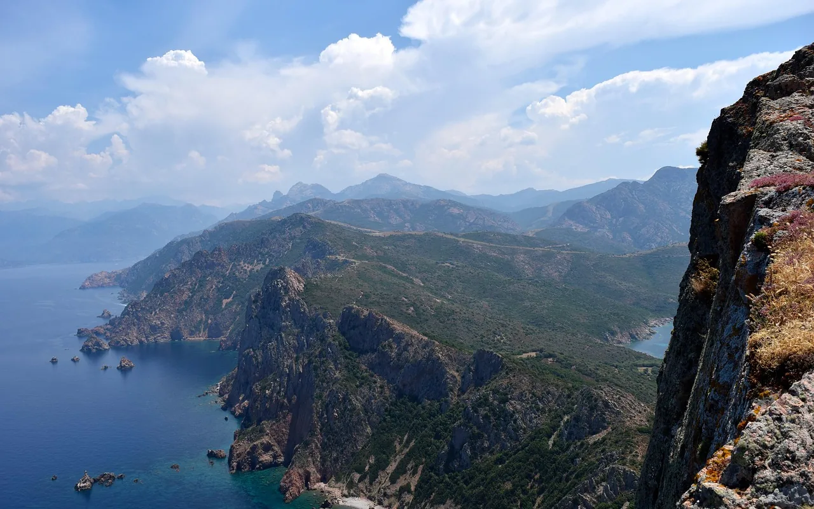
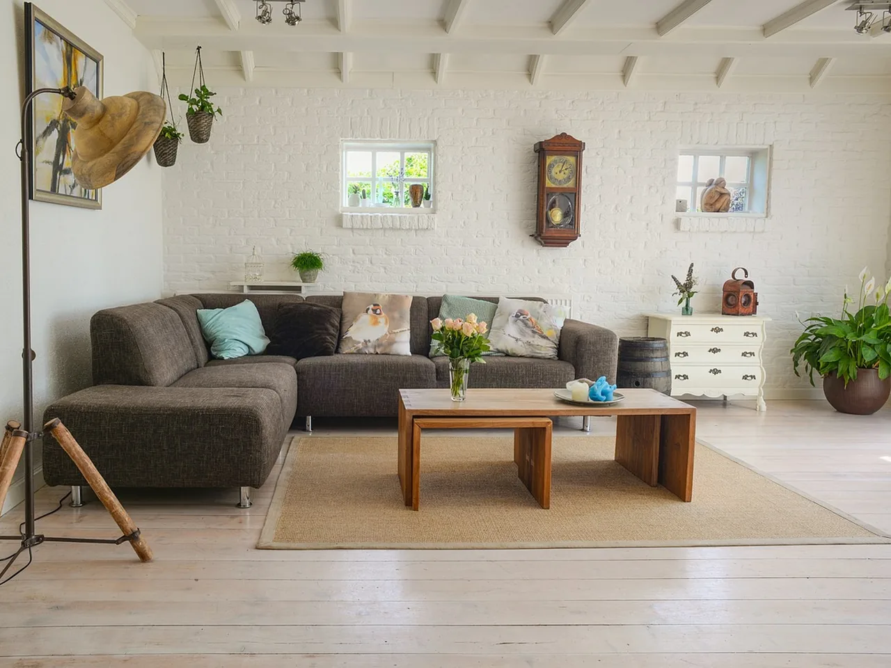
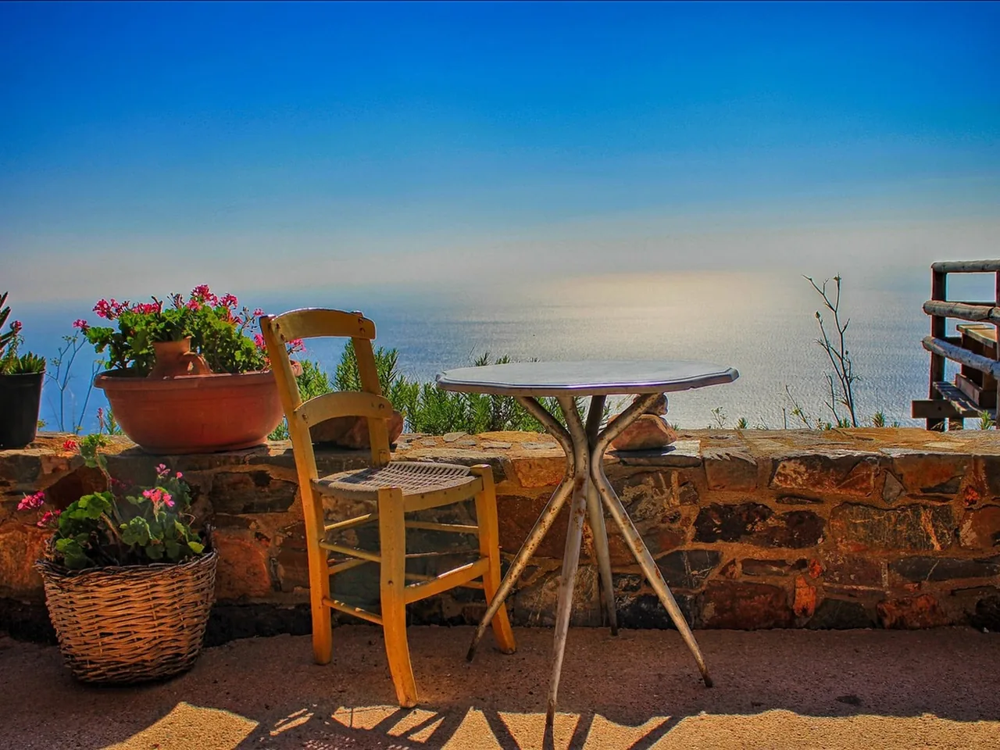
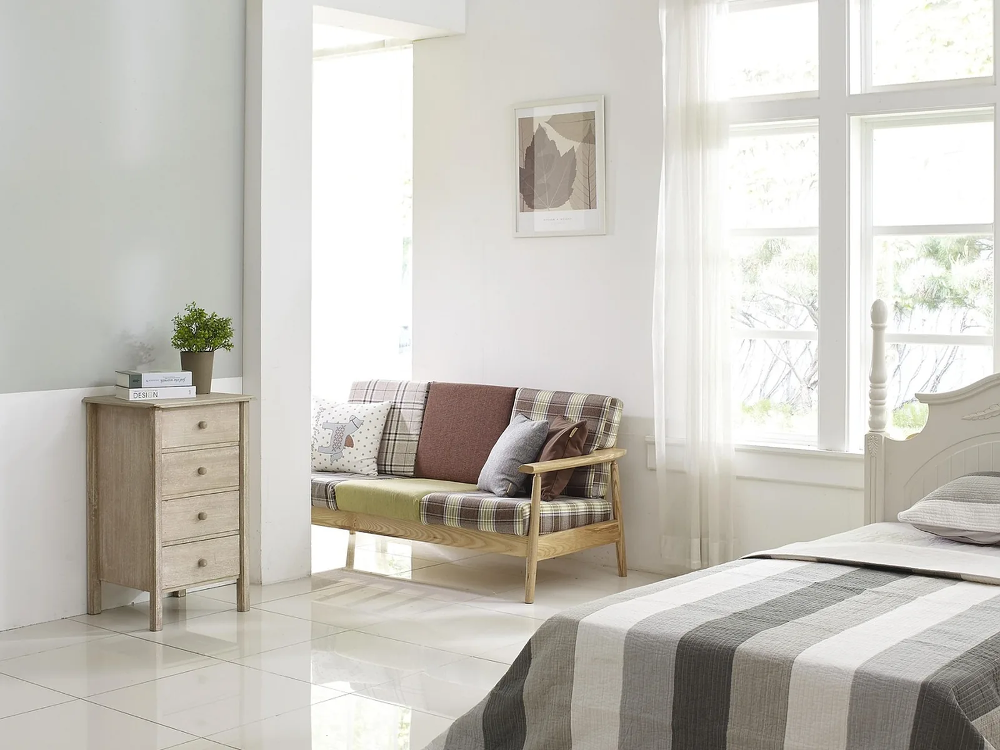
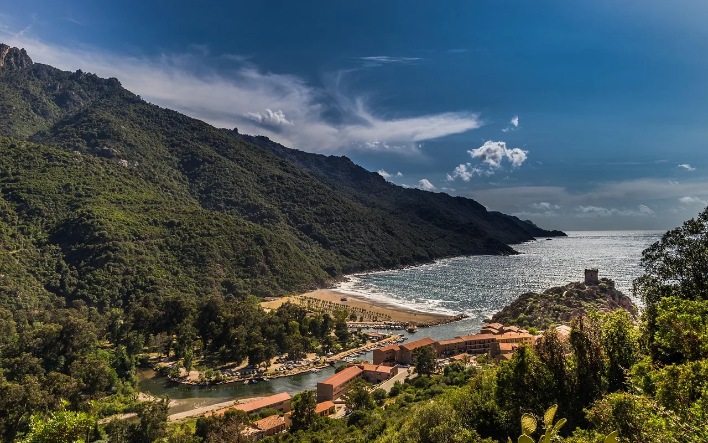
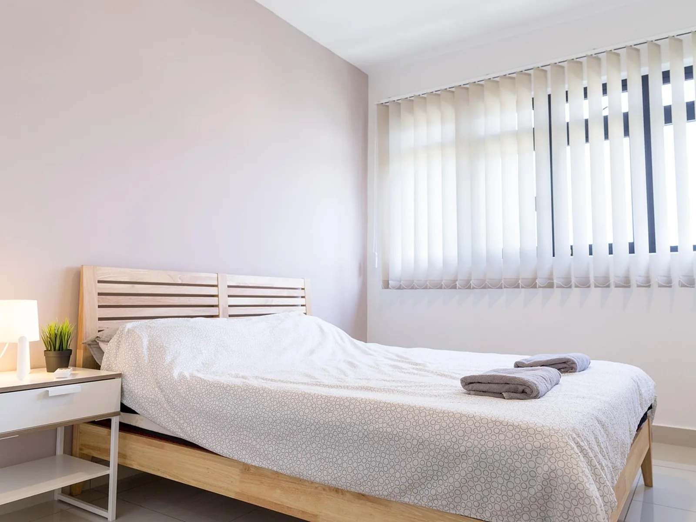
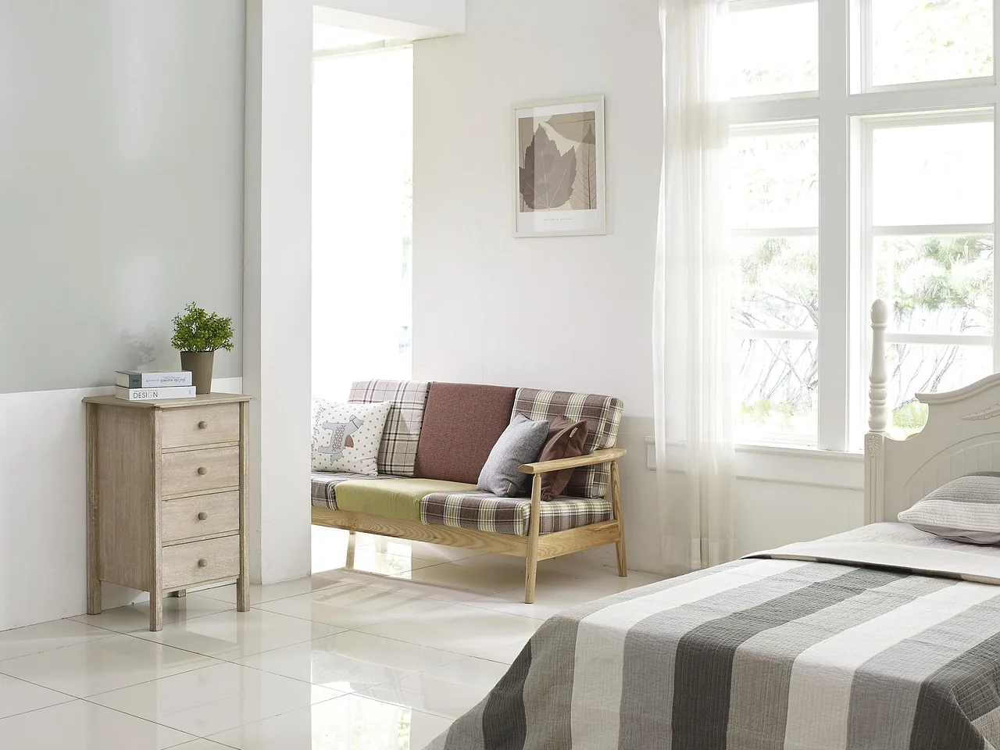

Une maison face à la mer, en Corse.
Quatre chambres sur deux étages, la mer depuis la terrasse. À louer de juin à septembre, à la semaine ou pour quelques nuits.
Deux étages, quatre chambres, la mer.
CioCio est une maison de vacances : on y vient en famille ou entre amis, on pose les valises et on ne reprend la voiture que pour aller au marché.
Pièce par pièce
Le séjour et la cuisine
La grande pièce de la maison : on y cuisine, on y mange et on y reste tard. Elle ouvre directement sur la terrasse.
- Cuisine équipée : four, plaques, lave-vaisselle, réfrigérateur
- Grande table pour huit
- Canapés et coin lecture

Photo d’exempleLa terrasse
Le matin pour le café, le soir pour le dîner : c’est la pièce où l’on passe le plus de temps, face à la mer.
- Table et chaises pour huit
- Coin à l’ombre pour la sieste
- Barbecue (à valider)

Photo d’exempleLes quatre chambres
Quatre vraies chambres, pour que chacun ait la sienne. Le linge de lit et les serviettes sont fournis.
- Lits doubles ou lits simples, selon la chambre (à préciser)
- Rangements dans chaque chambre
- Salles d’eau : nombre à préciser

Photo d’exempleAutour de la maison
La plage, le village, le marché : tout ce qu’il faut pour une semaine sans programme.
- Distance à la plage : à préciser
- Commerces et marché : à préciser
- Stationnement : à préciser
Le tour de la maison
Faites tourner les photos, avec les flèches ou du bout du doigt.



La vue
La mer, depuis la maison
Continuez à descendre : la fenêtre s’ouvre.
Chaque matin, c’est la première chose qu’on regarde. et la dernière, le soir
L’été, semaine par semaine
Les semaines encore libres, du samedi au samedi. Touchez-en une pour la demander.
Prix et disponibilités d’exemple, à valider. Hors juillet et août, on peut aussi venir pour quelques nuits : choisir ses dates jour par jour.
Une maison, une histoire
Pourquoi elle s’appelle CioCio, qui l’a bâtie, et comment on y vit l’été.
Une question ?
Écrivez-nous : on répond dans la journée.